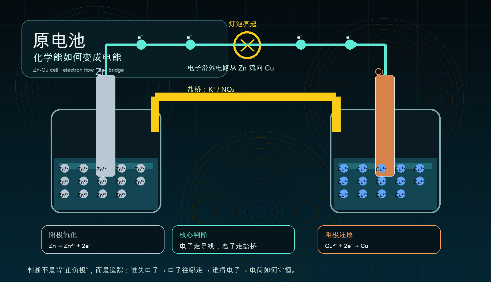
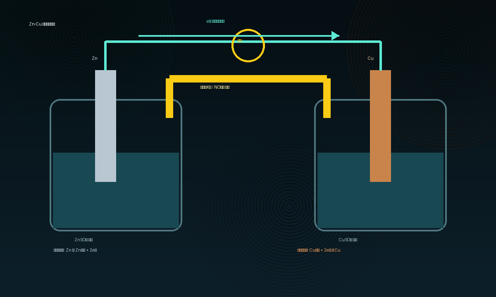
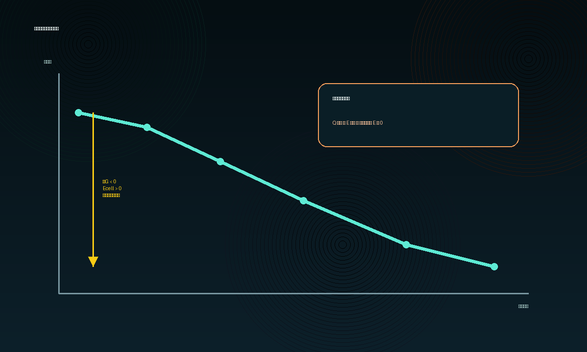

Interactive Canvas
互动实验：浓度改变，电压为什么变？
拖动 Zn²⁺ 和 Cu²⁺ 浓度。模型使用 25 ℃ 下的定性 Nernst 关系：E = 1.10 − 0.0592/2 × log([Zn²⁺]/[Cu²⁺])。
标准条件下，E ≈ 1.10 V。
你已经知道氧化还原反应会发生电子转移，但问题是：怎样把“电子直接转移”改造成“电子沿导线定向流动”，让小灯泡亮起来？

这张主图已经放在首屏右侧。学习顺序是：自发氧化还原 → 两个半电池 → 电子走导线 → 盐桥维持电中性 → 电池电势可做功。
先选一个你真正想解决的问题。后面的模型、提示和 AI 学伴都会围绕这个问题展开。
选择或输入后，本课会围绕你的问题展开。
Zn(s) 放入 CuSO₄ 溶液会自发反应：Zn(s) + Cu²⁺(aq) → Zn²⁺(aq) + Cu(s)。如果把反应分成两个半电池并接导线，电子会怎样流动？
氧化还原反应的本质是电子转移。锌比铜活泼，Zn 容易失电子，Cu²⁺容易得电子。
如果 Zn 和 Cu²⁺直接接触，电子在溶液界面转移，能量主要变成热，无法稳定驱动外电路。
原电池把氧化与还原放到两个半电池中，让电子被迫走导线，化学能就转化为电能。

Zn(s) → Zn²⁺(aq) + 2e⁻
锌片逐渐变薄，溶液中 Zn²⁺增多。这里是电子的来源。
Cu²⁺(aq) + 2e⁻ → Cu(s)
铜片上析出铜，Cu²⁺浓度降低。这里是电子的去处。
| 部件 | 看得见的变化 | 粒子层解释 | 常见误区 |
|---|---|---|---|
| Zn 电极 | 质量减小 | Zn 失电子形成 Zn²⁺ | 把“负极”当成一定发生还原 |
| Cu 电极 | 质量增加 | Cu²⁺得电子形成 Cu | 认为电子从铜片流出 |
| 导线 | 电流表偏转 | 电子定向移动 | 认为电子穿过溶液 |
| 盐桥 | 维持电流持续 | 阴阳离子迁移，抵消电荷积累 | 认为盐桥负责传电子 |
拖动 Zn²⁺ 和 Cu²⁺ 浓度。模型使用 25 ℃ 下的定性 Nernst 关系：E = 1.10 − 0.0592/2 × log([Zn²⁺]/[Cu²⁺])。
Zn-Cu 原电池刚接通后，如果拔掉盐桥，最直接的影响是什么？
阳极氧化：Zn → Zn²⁺ + 2e⁻。阴极还原：Cu²⁺ + 2e⁻ → Cu。电子数相同，直接相加。
若 Fe | Fe²⁺ 与 Cu²⁺ | Cu 组成原电池，请先写出 Fe 的氧化半反应，再与 Cu²⁺ 的还原半反应相加。
给定 Mg²⁺/Mg 与 Ag⁺/Ag 的标准电极电势，判断谁作阳极，并写出总反应。
Zn(s) + Cu²⁺(aq) → Zn²⁺(aq) + Cu(s)

已知标准还原电势：Cu²⁺/Cu = +0.34 V，Zn²⁺/Zn = −0.76 V，Ag⁺/Ag = +0.80 V。下列哪组原电池标准电动势最大？
在 Zn-Cu 原电池中，若其他条件不变，Cu²⁺ 被不断消耗，[Cu²⁺] 逐渐降低。下列判断最合理的是？
回到开头：原电池把自发氧化还原反应拆成两个半反应，让电子走外电路、离子走盐桥。只要能同时说清“谁失电子、电子往哪走、离子如何补偿电荷”，你就真正理解了原电池。
阳极氧化阴极还原电子走导线离子走盐桥电势来自反应驱动力
本课不是闭门造车。下面 3 个外部资源可用于课后对照：一个看电动势变化，一个看完整原电池说明，一个看开源实验平台。
前置知识：电化学基础、氧化还原反应。后续知识：电解池、金属腐蚀与防护。标准知识图谱模块会自动渲染本节点与相关节点。
情境素材建议：有关化学发现的故事：电离理论的建立、元素周期律的发展、原电池的发现、氯气的发现、人工合成尿素、工业合成氨、青蒿素的提取等。
实验例子：观察颜色、沉淀、气体或热量变化，要回到微粒、价态和守恒解释。
先判物质类别和微粒变化，再写方程或定量关系。
只背概念不看实验现象、微粒变化和守恒条件，会导致结论空泛。
课堂任务：请用“现象/文本/地图/实验数据 → 关键证据 → 学科解释 → 迁移应用”四步，重写一个关于「原电池」的新问题。
看见它：在「原电池：化学能如何变成电能」中，你最先观察到什么现象？
拆开它：把关键概念拆成 2–3 个可比较的要素。
解释它：用「因为……所以……」写出因果链。
比较它：与相近概念对比，说明差异。
迁移它：换一个新情境，还能用同一套思路吗？
复制提示词到 AI 学伴，生成「原电池：化学能如何变成电能」提纲或上传你的示意图。
可复制到下方 AI 学伴继续对话。